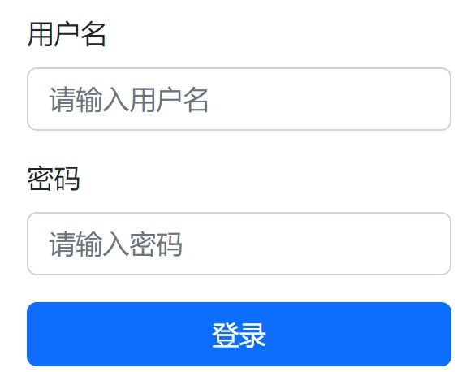
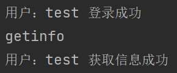
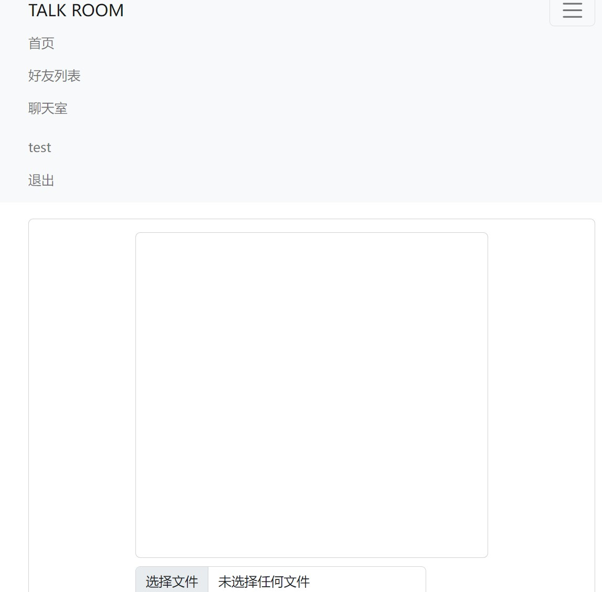
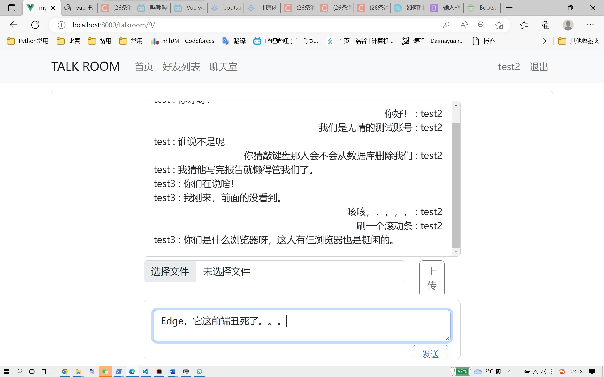

1 | title: "JAVA课程设计报告聊天室系统" |
一、课程设计要求与目的
目的：编写一个局域网Java聊天室系统，掌握Java网络通信、多线程、IO文件操作等高级应用编程技能。
要求：以课堂所给示例为基础，编写一个小型Java聊天室系统。
完成如下功能：
多客户端模式下，实现客户与客户的单独通信，要求信息通过服务器中转
端到端的通信，实现并行通信模式
实现端到端的文件传输
添加图形界面（选做）或其他新功能
二、系统设计与实现
设计原理与思想（Socket套接字通信原理，系统设计思想)
- 总体设计（类与类的关系）
CorsConfig类：解决跨域问题，前后端端口号不一样
SecurityConfig 类：设置访问的接口的权限，可以直接访问的，需要登录才可以访问的，
Websocketconfig 类：配置socket
WebsocketServer 类：处理客户传输数据请求
User 类：用户类，包括用户名，密码，id，等信息和数据库的列一一对应。
Posts 类 ：帖子类，记录用户发布的帖子，用户ID ，和数据库对应
Mapper 包：和数据库对接的，集成SQL语言，方便调用数据库
Controller 包：获取用户信息、登录、注册的地址
service 包：被Controller调用的接口
Service.Impl 包：接口的具体实现
- 详细设计（单个类的设计，关键步骤或算法，不要贴代码）
1）注册模块：
a. 获取前端传来的三个参数
b. 先对数据是否合法进行判断，如用户名密码不能为空，用户名首尾不能有空格，长度不能超过100，用户名是否已经被注册，两次密码是否一致等。
c. 符合条件后，对密码进行加密，并存储到数据库
2）登录模块：
a.获取用户的用户名和密码
b.将用户名和密码加密后，和数据库里的进行匹配
c.匹配成功后，将 userID 封装成 JWT token 并返回给客户端
d.客户端收到JWT后，会将其存到浏览器的内存中，可以实现刷新后无需再次登录。
e.退出登录后，会将浏览器存储的JWT删除。
3）获取用户信息模块：
a.该模块在登录前不可访问
b.将数据库内存储的信息返回给客户端
4）数据传输模块
a.从访问的URL中获取username
b.生成新的socket ，在线用户数量增加，并将整个类存储到websocketset集合里
c.实现onOpen函数，客户端发起连接请求时调用，返回连接成功
d.实现onMessage函数，用来获取某个客户端传来的信息。
e.实现sendMessage函数，将消息传给指定用户
f.实现sendAll函数，将消息传给所有在线的用户
g.实现tojson函数，将map转化为字符串类型再进行传输
三、系统测试
各功能测试用例（输入是什么，预期输出是什么），测试结果（贴运行图），结果分析（实际运行结果与预期输出比对，分析结果正确性）
1）导航栏、
登录前：
登录后：
2）用户注册及报错页面
注册成功，后台显示及数据库存储：
前端直接跳转到登录界面：

3）用户登录成功后台显示

前端跳转到个人界面，每位用户有单独的URL
发布帖子到个人主页，新发布的帖子在最上方
4）登录后可查看好友列表，同时，鼠标放到卡片上会有悬浮效果
点击进去可以看到个人主页，访问别人的主页没有发布帖子的模块
5）聊天室界面，该界面为自适应界面，可以适应不同的宽窄，


聊天效果
别人发送的在左边，自己发送的在右边
因为将JWT存到了浏览器里，所以在一台电脑上登录三个账号，需要三个浏览器。
实现了侧方滚动条，可以聊和多。

默认为群聊，私聊只需在前面加上要私聊的对象例如： test:你好呀！，就会私发给test用户，其他用户看不到。
发送文件：
点击选择文件，跳出对话框
选择后点击上传
预期效果和运行效果一致，实现了最开始设计地的大部分功能，个别功能因为时间原因没有实现，例如关注模块，粉丝数，以及个人头像上传等。
四、课程设计总结
对所做工作的总体总结：包括最终实现了哪些系统功能，使用了哪些Java编程技术、课程设计过程中遇到的问题(具体问题)、问题的解决以及收获
1）功能：
a.登录、注册，实现了JWT验证，并可将用户信息加密存储
b.个人主页发布帖子功能。
c.好友列表功能，可浏览其他人的主页
d.聊天室功能，包括私聊，群聊，文件传输。
2）技术：
a.基于Socket套接字的网络编程。
b.基于SpringBoot框架的后端实现
c. 基于Vue 架构的前端实现
d. 实现前后端分离
e. JWT 验证
f. 基于架构的MySQL数据库 的对接
3）遇到的问题
a.无从下手阶段，最一开始就想给聊天室写一个前端，但是对于前后端的的知识储备为 0 ，完全不知道从哪里开始。索性就直接看了一周网课，包括SpringBoot框架，和Vue架构。
利用所学的知识写了一些简单的功能后，以为聊天室可以信手拈来，一写才发现，自己学那些前后端的交接方式和课程要求的Socket 编程不是一回事，在vue的Socket传输和用Java写客户端的方式完全不一样，又花了两天时间，大概了解了 vue和springboot 的socket都是怎么用的，至此项目终于可以开始了。
b.首先是前后端分离，遇到了跨域问题，通过在前端和后端分别增加配置文件解决问题。
c.数据库无法访问，后发现，定义的列名中有大写字母，在SpringBoot的Pojo层是分大小写的，但是在MySQL里面大小写不敏感，就导致了无法访问，修改Pojo层变量名后解决问题。
d.用java写的客户端可以通过socket连上后端，但是用Vue的socketIO 始终连接不上，后不用Socketio，改用websocket 连接成功。
e.不知道如何在springboot里面实现，多线程，发送消息可以互不影响，一开始想的是在Controller里再写一个客户端，然后就可以和老师给的模板那样，实现一个多线程编程，然后前端Vue在来访问java客户端，java客户端进行socket数据传输后，再返回给前端，后来发现，Springboot本身自带一个类似于多线程的功能，本身就是可以接受很多个客户端的同时访问的，问题就自动化解了。
4）收获
a.虽然本次项目的重点应该在Java本身，但是一开始学Vue和SpringBoot的时候就已然走偏了，但终究历经千辛万苦，把所学的东西可以运用到这次项目里真的很有成就感。
b.对java的知识，尤其是socket 网络编程，十分熟悉了，虽然最终的呈现里，没有完完全全用java写socket，但是在项目的最一开始，反复写了很多遍简易版的Server和Center ，经反复实践，发现确实不能通过这个方式放到Springboot里，才更换思路，但是此时已经对socket理解更进一层了，为后面用别的工具写socket提供了帮助。
c.这个项目真的写了很久，也真的收获了太多，不仅仅是Java的知识，而是打开了一扇新世界的大门，作为自己的第一个项目，希望日后可以慢慢完善，当做自己学习前后端知识的log吧。